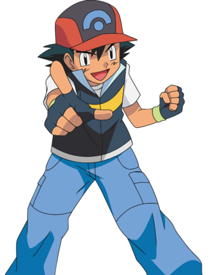
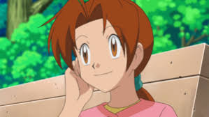
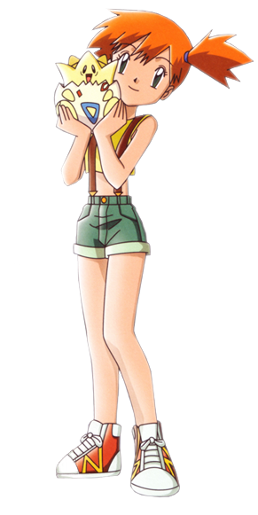
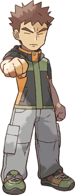
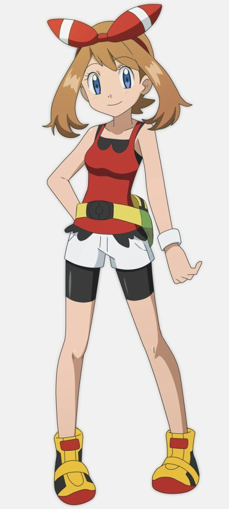
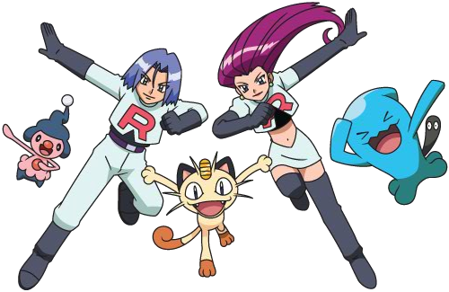
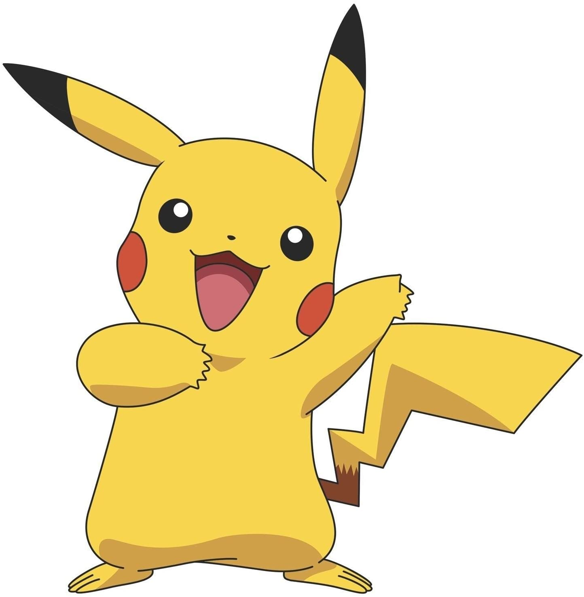

 Sacha (Ash KetchumN), connu au Japon sous le nom de Satoshi (サトシ) est le héros de la série ; ce garçon qui a commencé son aventure à l'âge de dix ans espère devenir « Maître Pokémon », le meilleur dresseur de Pokémon au monde en traversant le monde Pokémon avec son équipe de Pokémon.
Mon village natal

Voici Bourg-Palette le village où Sasha a vécu toute sa vie avec sa mère. C'est là où le professeur Chen lui donne son premier pokémon et que son aventure commence.
Mes Amis
- 
Voici la mère de Sasha. C'est elle qui lui donne l'autorisation d'aller à l'aventure !
- 
Ondine (Misty), connue au Japon sous le nom de Kasumi (カスミ) Elle fait partie du Pokégroupe avec Pierre et Sacha par intermittence pendant les cinq premières saisons. À partir de la saison 6, elle retourne à l'arène d'Azuria pour assurer l'intérim de ses sœurs qui font un tour du monde en croisière. La jeune fille a décidé de suivre Sacha jusqu'à ce que celui-ci lui rembourse sa bicyclette détruite par Pikachu. Mais finalement, elle oublie cette raison et décide d'accompagner Sacha dans Kanto, Johto et l'Archipel Orange afin de parfaire son apprentissage dans le but de devenir Maître Pokémon Eau.
- 
Pierre (Brock), connu au Japon sous le nom de Takeshi (タケシ) Dans le dessin animé, Pierre est à la base le champion de l'Arène d'Argenta. Cependant, à la fin du cinquième épisode de la 1ère saison, il fait le choix de partir à l'aventure en rejoignant Sacha et Ondine, tandis que son père Flint le remplace. Il explorera ainsi avec Sacha la région de Kanto à deux reprises, ainsi que Johto, Hoenn et Sinnoh. Lors de la seconde saison de l'animé, il ne parcourt que partiellement l'archipel Orange, car il reste sur Valencia, la première île le constituant, avec le professeur Flora. Une séparation apparemment douloureuse, et dont il refusera systématiquement d'expliquer les raisons, l'amènera à retrouver ses amis par la suite.
- 
Flora (May), connue au Japon sous le nom de Haruka (ハルカ) Flora est un personnage important du dessin animé lorsque Sacha s'aventure dans la région de Hoenn. Elle a croisé Sacha au début de sa propre aventure, où elle a choisi son premier pokémon : Poussifeu. Son but est de devenir la meilleure coordinatrice pokémon, elle apparait de la saison 6 à la saison 9, côté familial, elle a un petit frère nommé Max et son père un le champion d'arène de Clémenti-Ville, sa ville natale.
- 
Bon d'accord ce ne sont pas ses amis mais plutôt le contraire. Ils essaient toujours de lui voler son pikachu.
Mes principaux pokemons
- 
Voici le premier pokémon de Sasha : Pikachu ! Le professeur Chen le lui a donné au début de mon aventure.

Chenipan (Caterpie en anglais) est un pokemon que Sasha a attrapé tout près de son village. C'est le premier pokémon qu'il a réussi à capturer.

Bulbizarre (bulbasaur en anglais) est un pokémon qui est devenu fidèle a Sasha lors d'un combat contre la team Rocket. Il l'accompagne dans ses aventures depuis.